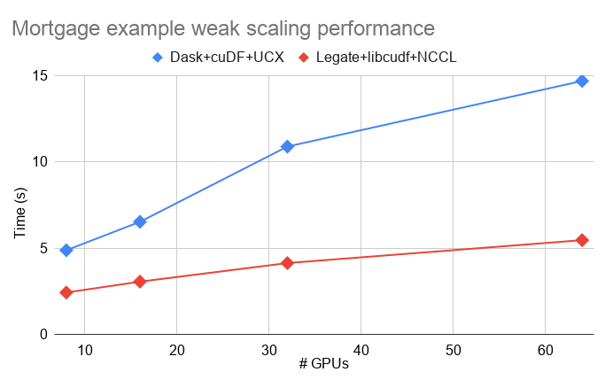

Legate Pandas¶
Legate Pandas is a distributed and accelerated drop-in replacement of Pandas. Legate Pandas enables high-performance, scalable execution of dataframe programs on multi-GPU systems by combining the Legion runtime with GPU accelerated dataframe kernels in cuDF. Legate Pandas targets dataframe programs with data processing requirements that cannot be fulfilled by a single GPU.
Here we show some preliminary performance results with Legate Pandas.
The following shows weak scaling performance of join micro-benchmark measured on an NVIDIA DGX SuperPOD (the lower the line is, the better):

All implementations (Legate Pandas, Dask+cuDF, and MPI+cuDF) use the same GPU-accelerated dataframe kernels in cuDF and differ only in the programming system and communication API. (the “explicit comm” version used a hand-optimized all-to-all shuffle code, instead of Dask’s shuffle implementation.) The Legate Pandas version achieved almost the same level of performance as the hand-written MPI+cuDF version, despite the latter requiring significantly more efforts to write. Both of the Dask versions struggled to keep up with Legate Pandas.
Legate Pandas also showed better performance than Dask+cuDF on a realistic example. The following shows weak scaling performance of the mortgage data example measured on an NVIDIA DGX SuperPOD (the lower the line is, the better); Legate Pandas was on average ~2.4X faster than Dask:
Legate Pandas is still a work-in-progress that is missing some features that Dask+cuDF supports, but we believe that the performance and composability of Legate Pandas is demonstrative of the value of our approach.
Dependencies¶
Legate Pandas requires Python >= 3.6 and the following packages:
arrow-cpp=1.0.1arrow-cpp-proc=3.0.0pyarrow=1.0.1numpynccl>=2.7cudf=0.19librmm=0.19rmm=0.19
All except the last three packages can be found in the
conda-forge channel and the
rest can be downloaded from the
rapidsai channel.
We provide a conda environment file that installs all these dependencies in one step. Use the following command to create a conda environment with it:
conda env create -n legate -f conda/legate_pandas_dev_nccl2.8.yml
Users must also install Legate Core to build Legate Pandas from source.
Installation¶
Legate Pandas can be built and installed from source using two install scripts,
setup.py and install.py. Both can be used interchangeably, but the latter
provides additional flags to configure the build, which are intended for
advanced users. To see the list of all build flags, run ./install.py --help.
Both scripts take five essential flags, one for a path to each dependency:
--with-core (path to the legate.core installation)--with-arrow (path to arrow-cpp)--with-cudf (path to cudf)--with-rmm (path to rmm)--with-nccl (path to nccl)
These paths need to be provided only once and the paths will be cached for later rebuilds. An example command to install Legate Pandas under a conda environment per our instruction is:
./install.py --with-core (path-to-legate.core) \
--with-arrow "$CONDA_PREFIX" \
--with-cudf "$CONDA_PREFIX" \
--with-rmm "$CONDA_PREFIX" \
--with-nccl "$CONDA_PREFIX"
Execution¶
The very first step to start using Legate Pandas is to replace this import statement in your program:
import pandas as pd
with this:
import legate.pandas as pd
To execute Legate Pandas programs, you need to use the custom Python launcher
legate included in the Legate Core installation. The launcher uses only CPUs
by default, and you can command it to use GPUs with --gpus (gpu count). The
launcher takes other machine flags (such as the maximum framebuffer size to
use) to configure execution; see the “How Do I Use
Legate” section
for further details.
Supported Features¶
Pandas has an incredibly large API that any attempt to build a drop-in replacement for it takes enormous effort. Legate Pandas is still work in progress and currently covers the following list of features that we think are essential for data processing:
Joins (
mergeandjoin)Groupby reductions (
groupby.sum,groupby.mean,groupby.var, etc.)Sorting (
sort_valuesandsort_index)Arithmetic and comparison operators
Cumulative operators (
cumsum,cummax, etc.)Reduction operators (
sum,mean,var, etc.)IO with CSV and Parquet file formats
See the API reference for a complete list of supported features.
Legate Pandas currently supports the following data types:
All primitive data types
String
Categorical types
datetime64[ns]
Differences between Pandas and Legate Pandas¶
Since Pandas has not been designed and implemented for parallel execution in mind, many of its semantic guarantees are not necessarily suitable to match under a distributed execution setting. Though we strive to match Pandas’ semantics as much as possible in Legate Pandas so that users can port their code to Legate Pandas effortlessly, there are some occasions that we had to diverge for performance reasons:
Joins do not sort keys of the outputs.
Groupby reductions do not sort keys of the outputs by default. Users can still request sorted outputs with
sort=True, which merely sorts the outputs before returning them.Concatenation and append operation in Legate Pandas on
axis=0perform a union of operand dataframes/series and not back-to-back concatenation.
Limitations and Known issues¶
The following is the list of limitations and known issues in the current release of Legate Pandas. We are actively working on addressing these issues. Any comments, suggestions, and feature requests are welcome.
The current partitioning strategy simply distributes a dataframe or series across all the GPUs (or CPUs, if GPUs are not available) as evenly as possible. A more intelligent partitioning heuristic taking the data size into account is still in progress.
All operations that take more than one dataframe or series, such as binary operators, expect all the operands to be aligned on indexes. For examples, Legate Pandas throws an unimplemented exception on the following example:
x = pd.Series([1, 2]) y = pd.Series([1, 2], index=[3, 4]) x + y
Legate Pandas raises a hard error for cases where Pandas would have raised exceptions, such as failing to encode a value into a given set of categories.
Categories must be strings for now.
Legate Pandas is currently piggybacking on Pandas for indexes and categorical types, and provides no native abstractions for them. In particular, accessing the
indexproperty of a dataframe or a series will materialize the index distributed across multiple memories into a single Python object, which can be problematic when the index does not fit to a system memory. Users should avoid using it and instead convert the index to a column withreset_index.Some options in the operations found in the API references may not be supported. Legate Pandas will raise an exception when the user passed such options. In particular, the
locandiloclocators do not accept arbitrary lists of index values as indexers for now.Locators,
head, andtailcurrently make a copy of the selected part of operand dataframe/series, for which Pandas would return a view to it. For example, the following in-place update internally copies 999 untouched elements:x = pd.Series(range(1000)) x.iloc[0] = 0
In general, the CPU implementation in Legate Pandas is only functionally correct and not optimized. We recommend you run Legate Pandas on GPUs for any performance evaluation.
There is a known issue in NCCL 2.8 that is causing hang on multi-node systems using Volta or older generations of GPUs. On such systems, please use NCCL 2.7 to avoid the issue. We provide a conda environment file that installs NCCL 2.7 instead of 2.8.